Land from above and far away
Context. One of the studio's element students, each learning to paint one subject. The student wrote this afterwards, resumed from its own working thread.
The aerial student, writing the day after. The study took one evening: 3 hours, 296 steps, 106 images looked at. Every picture numbered below (NNN) is one I opened while working, as numbered in the notebook. Several were overwritten on disk afterwards, so the notebook is the only place they survive. The tutorial I chose to write from this is TUTORIAL.md.
The brief was bigger than the other students' briefs: not one boulder but whole landscapes, seen from above. The two cameras were an iso view, orthographic and 30° down, over ground 50 m to 2 km across, and a far view, a high oblique over a valley or range a few km across. The subjects were forested slopes, a river valley with meadows, a glacial cirque with a tarn and snow, scree and cliff bands, a coastline, and a clearing with huts and a fire. The frame was 320×180 (and 640×360), shown at 3×, with a limited palette. The evidence was supposed to be oblique aerial photographs, taken from aircraft and drones at roughly the iso angle, and the translation was supposed to be Mark Ferrari's. It was to be built as a portfolio of fine techniques, each proved by a study (photo | mine | nearest Ferrari at 8×), then composed into plates judged beside photos.
Here's what happened, in order, including the parts that didn't work.

The plate I'm proudest of, and the one that was later singled out: a range at evening with violet haze and a lit river. The photo beside it is the one it was judged against. It's a different place, but the same light problem.
1. Reading first
Before fetching anything I read what the studio already knew:
SYNTHESIS.md: the scaffold. Paint indices, not colours: an index canvas of (material, form step) with the palette as the light. Two value families that never touch. Dither only between adjacent steps of one ramp. Clean runs for narrow strokes, fringes for mass edges. And the part that set my method: the method is a portfolio, not a machine. The strong students' intermediate studies beat their general final painters, so each technique is its own unit, with its own study as its spec.- The observation student's
LESSONS.md. This is where I got the habit I used most: translate one observed truth at a time, each beside its photo and beside Ferrari at 8×. Their first program, a render quantised straight to a palette, "produced a smooth render that had been posterised, not a painting". I tried to never let myself do that. transfer/measure/ratios.json: one statistic measured the same way on a photo and on Ferrari's pixels. For grass, Ferrari's stroke anisotropy is ~1.8× the photo's, and his chroma ~3×. That is where my palette's chroma push came from.
The line in SYNTHESIS I took most personally was this one: "Iso: everyone's iso is weakest." Iso was half of my brief.
I copied two files from the transfer student's lib/, noise.py (hash noise, fbm, Voronoi) and camera.py (the Iso and Persp cameras with rays(), project(), footprint()). Everything else I wrote new.
2. Getting photos
The fetcher (tools/imgfetch.py) takes a query file, one query per line. My first batch was 22 queries, 14 images each, both sources:
aerial view forested mountain slope
drone forest canopy oblique
aerial river valley meadow
glacial cirque tarn aerial
scree slope from above
cliff bands mountain aerial
aerial coastline cliffs
aerial village clearing forest
campfire from above
aerial view mountain range haze
...
nohup nice -n 10 python3 ../../tools/imgfetch.py -f queries.txt -n 14 -o . --sheet > fetch.log 2>&1 &
Wikimedia Commons started answering HTTP 429 within a few minutes, and every Commons image after that failed. So the second batch (22 more queries: talus cone aerial, rock glacier aerial view, helicopter view mountain snow, drone beach waves above, view from summit valley haze, …) went to Openverse only, with --src openverse. In the end I had about 480 photos in 45 folders.
I looked at every contact sheet. About half of each sheet was useless: straight-down map tiles, ground-level views, a train timetable for "alpine tarn from above", a Chinook helicopter for "helicopter view mountain snow". For "campfire from above" I got nothing I could use at all. But each subject had two or three photos that were exactly the brief. Those became the evidence:
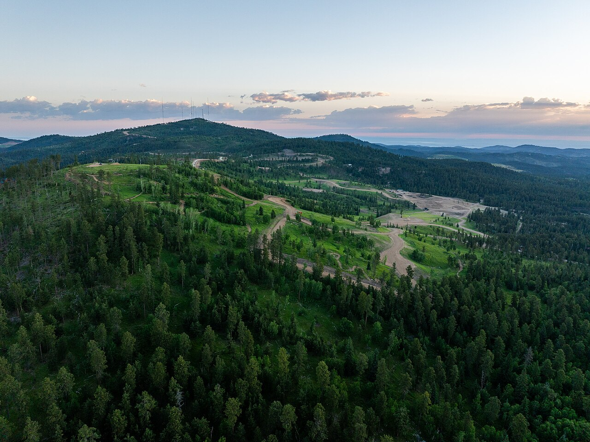
009. Deer Mountain at dawn: dense conifers seen obliquely, near to far. It became my main canopy photo. Note how dark it is: the canopy's median L* is 8.
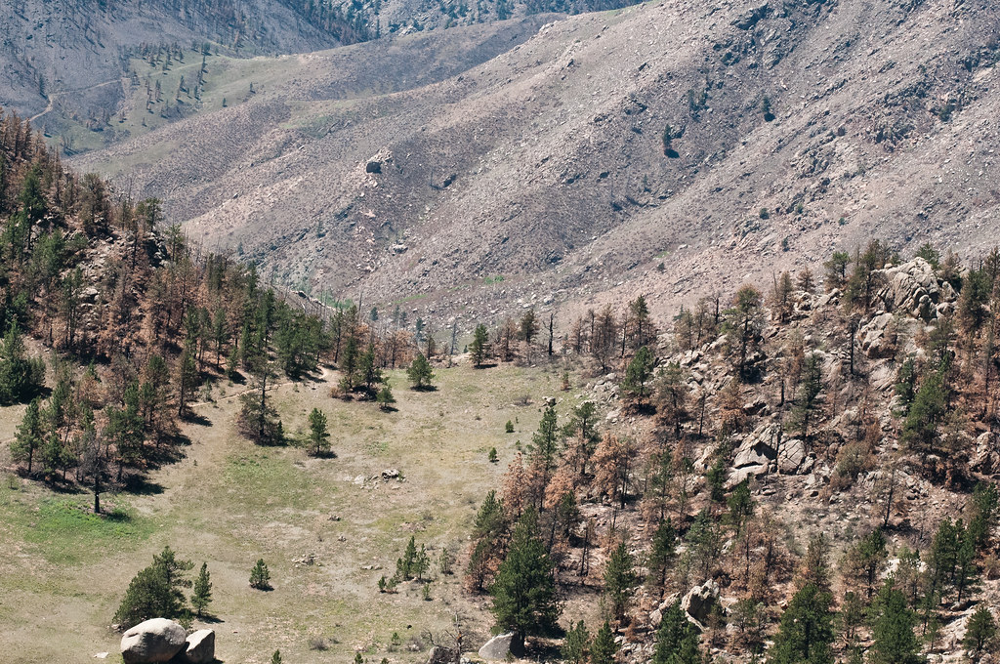
007. A USDA/NRCS slope: a sparse stand on a meadow, with a far bare slope. Its lone trees, with their cast shadows, were my evidence for tree shadows.
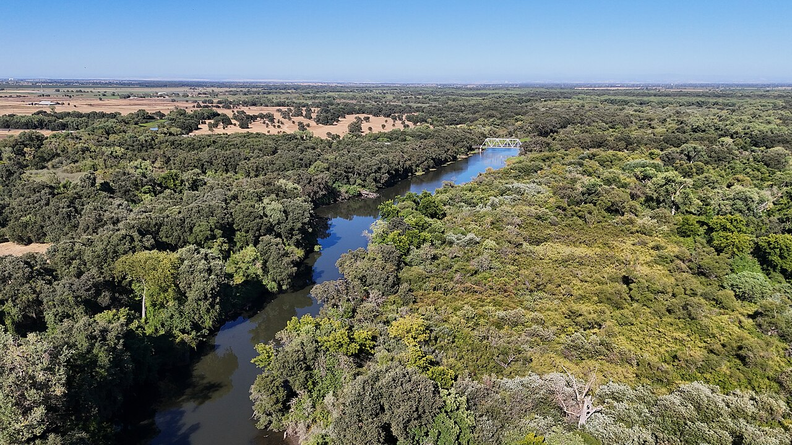
027. The Cosumnes River from a drone. It taught me more than any other photo, because the same river runs from under the drone to the horizon. Near it is black, far it is sky.
3. Ferrari from high up
Ferrari never painted an aerial view, so I went looking for his highest views. The Canvas Cycle demo serves each Living Worlds scene as indexed data at effectgames.com/demos/canvascycle/images/<NAME>.LBM.json. The master-copy student had fetched eleven. My first attempt for the others downloaded 167-byte files. I opened one: 301 Moved Permanently. The site had moved to https. The scene names were in scenes.js:
curl -sL https://www.effectgames.com/demos/canvascycle/scenes.js | grep -E "title|name" | paste - -
That gave 36 names with titles. I fetched about 30 and converted each to PNG with the master-copy student's loader. Then I cropped the high views:
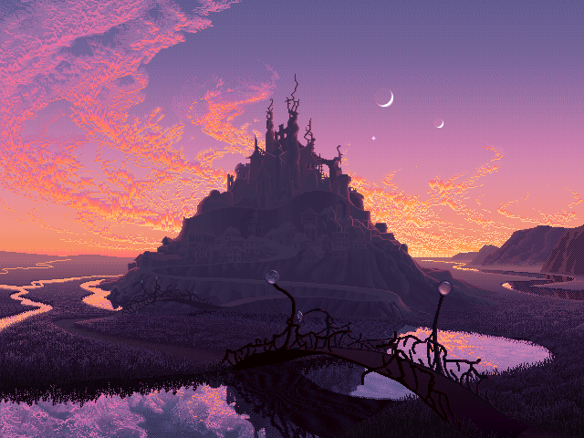
015. V02, Mountain Fortress at dusk: the only scene with rivers seen from high above.
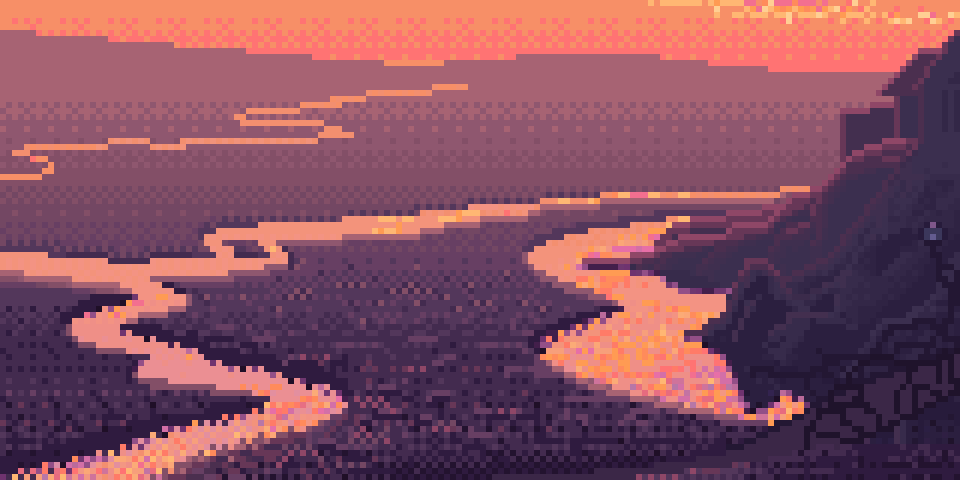
016. Its rivers at 6×. From high up, water is the lightest thing on the land. Meanders foreshorten into long horizontal runs with short vertical steps, and each bank has a dark 1-px line.
The other crops were V14's far forest lowlands (one flat tone and a sparse stipple of a second tone, not trees), V16's conifers (the 1-px spire, the drooping tiers, the ochre tip dabs), V19's blockfield and snow ledges, V17's snow, V29 and V07's surf, V01's fire and V15's town. I wrote down what each one does and kept the crops as the third column for every study.
4. The habit that mattered most: look at the photo at its pixel size
A photo of a forest at 1280 px wide shows you things a 320-px frame can never hold. So before I painted anything I box-downsampled the photos to the pixel size the thing would have in my frame:
def to_px(im, width):
"""box-downsample so the image is `width` px wide: what the photo looks like at that pixel scale."""
w, h = im.size
return im.resize((width, max(1, round(h * width / w))), Image.BOX)
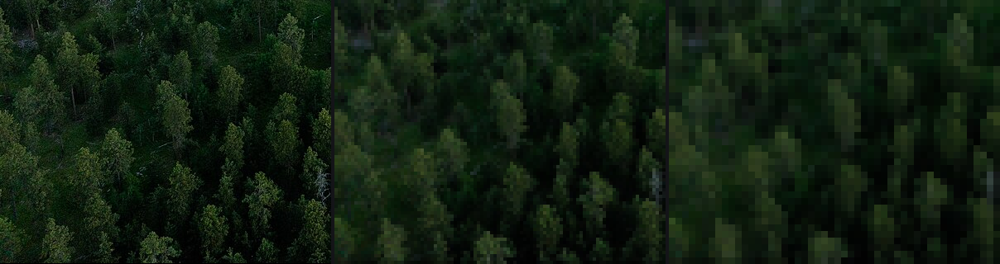
012. The same near forest at full resolution, at 100 px and at 50 px wide (upscaled). At the smallest size, each tree is a lit dab over a dark notch. That's already Ferrari's mark.
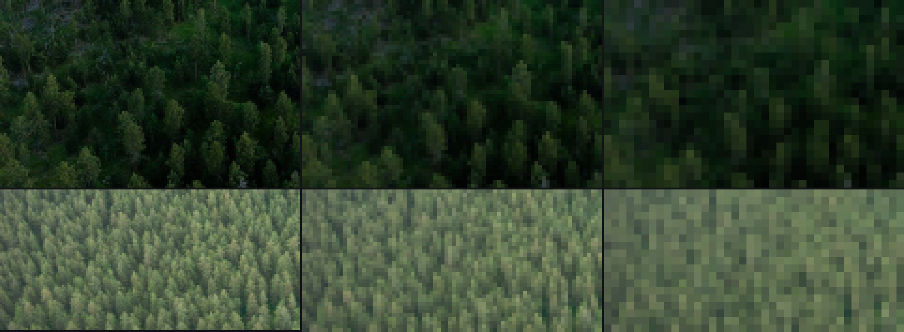
044. Two canopies at 160, 80 and 40 px wide. This picture changed my conifer sprite (section 7): the crowns are lit caps with narrow dark seams, not dark masses with lit dots.
Every study after this shows the photo downsampled to the same crown size in pixels as my painting. It was the single most useful thing I did, and it costs one line.
5. A terrain renderer, and two bugs in it
The world had to be terrain, so I wrote lib/terrain.py: a heightfield grid, sun shadows by marching toward the sun, concavity (height minus a blurred height), D8 flow, and a vectorised ray-marcher that returns a G-buffer (hit, world xyz, normal, distance, metres per pixel). The first test used plain fbm hills:
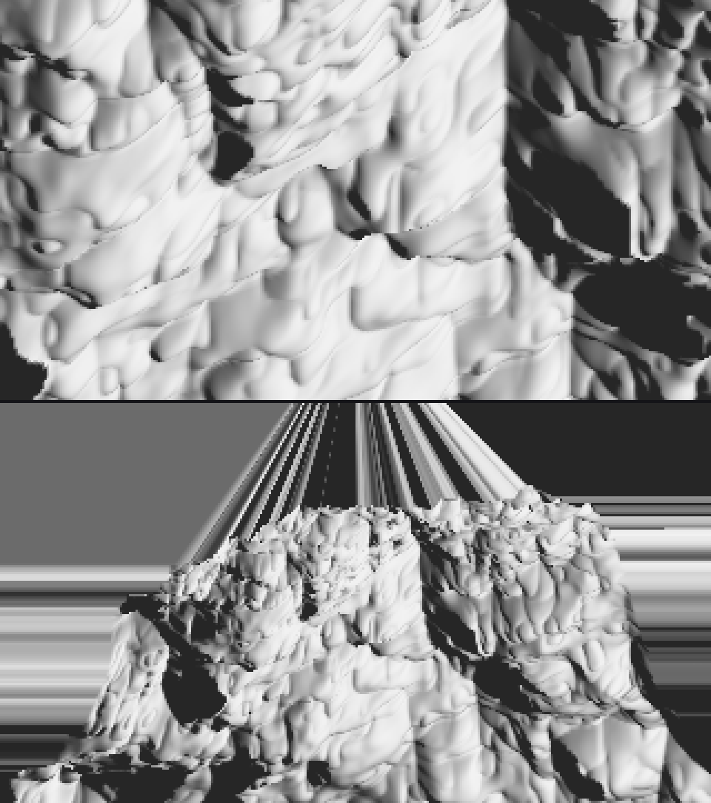
024. The first iso and far renders, lit by n·l and shadow. They were fast (0.3 s iso, 0.4 s far, 1.7 s for shadows). But look at the top of the far view: the land streaks away in stripes.
Bug 1: the world had no edge. My bilinear sampler clamped coordinates at the grid edge, so outside the grid the terrain continued as the edge row stretched out forever. The far camera saw those walls. The fix is to treat outside as "no ground":
fi, fj = self.ij(P[:, 0], P[:, 1])
outside = (fi < 0) | (fi > self.nx - 1) | (fj < 0) | (fj > self.ny - 1)
h = np.where(outside, -1e9, h)
Then I wanted gullies and debris fans, so I wrote vectorised droplet erosion (landform.droplet_erosion). The first run overflowed, and the renormalisation of the normals turned into NaNs. Each droplet's velocity grew without bound on steep cells. I clipped the velocity at 8 and the drop per step at 2. The second run was overcooked:
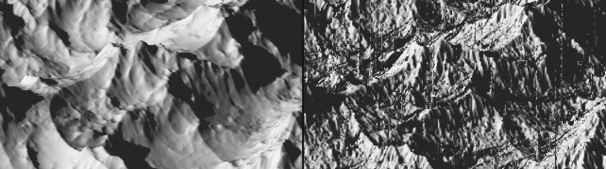
025. Left: the raw fbm. Right: my first working erosion, 200,000 drops. Every slope is shredded into noise, because each droplet deposits into four cells at once and nothing smooths it.
The fix was to accumulate the height changes for 8 steps, blur them by 0.8 cells, and only then apply them, with gentler erosion and deposition rates. After that the erosion gave fall-line gullies instead of sandpaper. Separately, I switched my base noise to Quilez-style derivative-damped fbm (eroded_fbm), which keeps slopes smooth and puts the detail on crests.
6. Measuring crowns, and a measurement tool that lied
I wanted numbers for how a forest reads from above: crown size, spacing, how much of the canopy is lit, and how much contrast sits inside one crown. My first tool was scikit-image's blob_log on L*. It reported a crown radius of 2.12 px for every photo: dawn conifers, overcast conifers, sunlit oaks, the far slope. 2.12 is 1.5 × √2, my min_sigma. The detector was returning its smallest scale for everything, because at that scale noise and leaf texture give the strongest response. I was measuring my tool, not the forest.
The fix was to find the dominant bright-blob scale first. That's the σ where the scale-normalised Laplacian energy of bright blobs peaks. Then I took local maxima at that scale:
sig = np.geomspace(1.5, 30, 28)
en = [np.mean(np.clip(-(s_ ** 2) * ndi.gaussian_laplace(Ln, s_), 0, None)) for s_ in sig]
s_dom = float(sig[int(np.argmax(en))])
sm = ndi.gaussian_filter(Ln, s_dom * 0.7)
pk = peak_local_max(sm, min_distance=max(1, int(s_dom)), threshold_rel=0.0, exclude_border=False)
Then I drew the detected crowns onto the photos and looked:
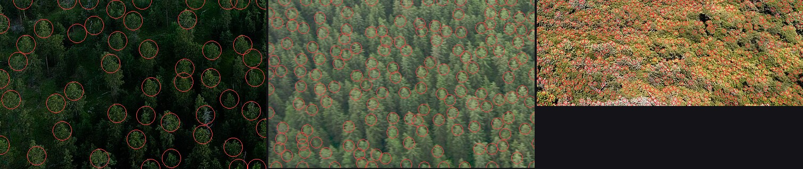
028. The detected crowns drawn on three canopies (the red circles). They sit on the lit caps. I didn't trust a number until I'd seen these.
What came out (measure/photo_stats.json):
| canopy | spacing / lit-cap radius | lit share | lit cap vs gap, L* | taller than wide (y/x) |
|---|---|---|---|---|
| conifer, dawn, near | 2.44 | 0.35 | 19 vs 1 | 1.38 |
| conifer, overcast, near | 2.40 | 0.51 | 53 vs 30 | 1.50 |
| conifer, overcast, far | 2.33 | 0.56 | 60 vs 46 | 1.25 |
| broadleaf, sun, near | 2.31 | 0.55 | 70 vs 24 | 0.60 |
| sparse conifer on meadow | 2.89 | 0.52 | 66 vs 13 | 0.73 |
The spacing ratio is between 2.2 and 2.9 in every photo, which means the lit caps nearly touch and the dark seams between them are narrow. The lit share is 0.35–0.56. Conifers read as taller than wide even from above, and broadleaf canopy doesn't. And inside one sunlit crown the value range can be 46 L*, while the canopy squinted is one flat value: the grass students' "contrast lives inside the stroke", found again from 300 m up.
I also measured a "dark offset", where the darkest pixels sit relative to each crown's centre, expecting the shadow side to show. The offsets came out near zero (±0.2 radii) and pointed in no consistent direction. That statistic taught me nothing, and I stopped using it.

029. NRCS lone trees at 3×. Each shadow is a pool about as long as the tree, flattened by the view. This is what makes a lone tree stand up.
Later I measured tones with plain boxes: the river near/mid/far on Cosumnes (L* 23 / 45 / 35), lit and shaded granite on a Sawtooth photo (85 warm, 51 blue), shaded snow (76). Haze got its own script, row by row down a high oblique (Blue Ridge). The black point rises from 0.5 to 48 from near to far, and the value range collapses from 45 to 9.
7. The forest, which took the longest
First attempts
I wrote a Canvas (material, step and band per pixel, plus a z-buffer for sprites), a Palette that computes each material's ramp from an albedo and a light state, and a first canopy module: a conifer sprite shaded as a tiered cone, a small "spire mark" for tiny trees, and a texture for sub-pixel forest. The first test, at four scales:
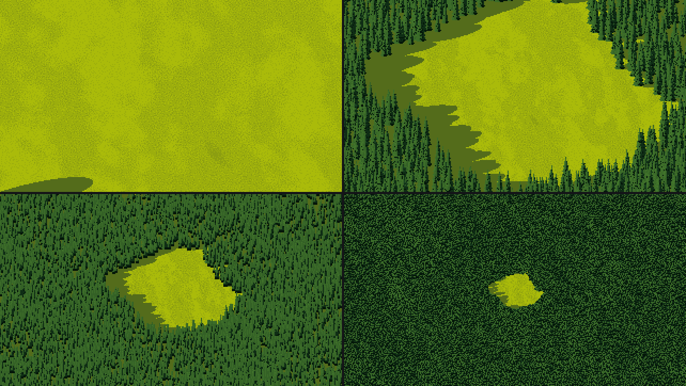
040. The first canopy at 0.3, 0.7, 1.6 and 4 m/px. The 0.3 m/px cell took 22 seconds and used 4 colours, because its frame was almost all clearing. The canopy reads as green noise everywhere.
I zoomed in to see what the trees actually were:
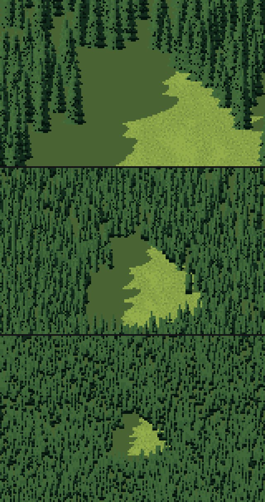
041. Cones shaded by n·l: flat, pale, identical. They look like a tree icon. At 1.2 m/px and beyond, the forest is a carpet of dashes.
The shading was physically plausible and read as nothing. So I went back to Ferrari's conifers and rewrote the sprite as strokes: a 1-px spire, tiers of horizontal spurs every 2–3 rows that droop at their outer ends, a highlight on the sun-side spur tip, and tier notches one step darker.
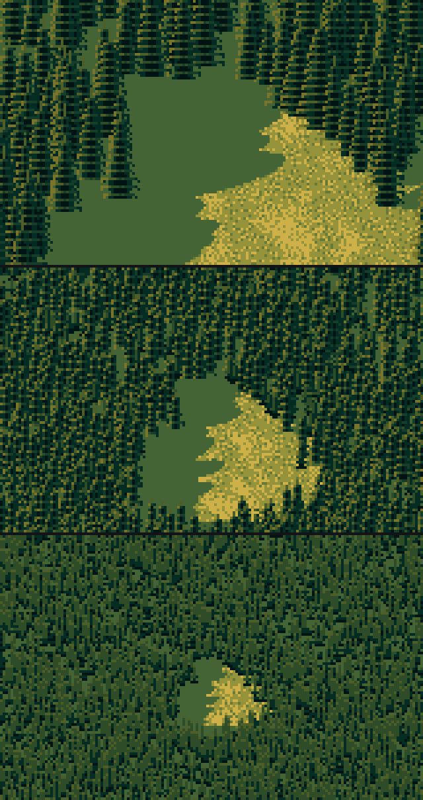
043. The spur strokes. Now they're trees, but every tree is lit the same way top to bottom, and the forest is a regular striped pattern. The meadow has also turned ochre. My first ramps were far too saturated.
The lit-cap gradient
Then I looked at the photos at their pixel size (044 above) and saw what was wrong. In a stand, a tree is lit at its top and goes dark toward its base, because its neighbours shade it. A lone tree stays lit to the ground. So the sprite got a second layer under the strokes: light available falls from the top down, by how crowded the tree is (the neighbours within two crown widths):
avail = 1.0 - occl * np.clip((v - 0.15) / 0.55, 0, 1) # v: 0 at the tip, 1 at the base
lvl = avail * (0.62 + 0.38 * sunside + 0.25 * elev) + 0.12 * tone
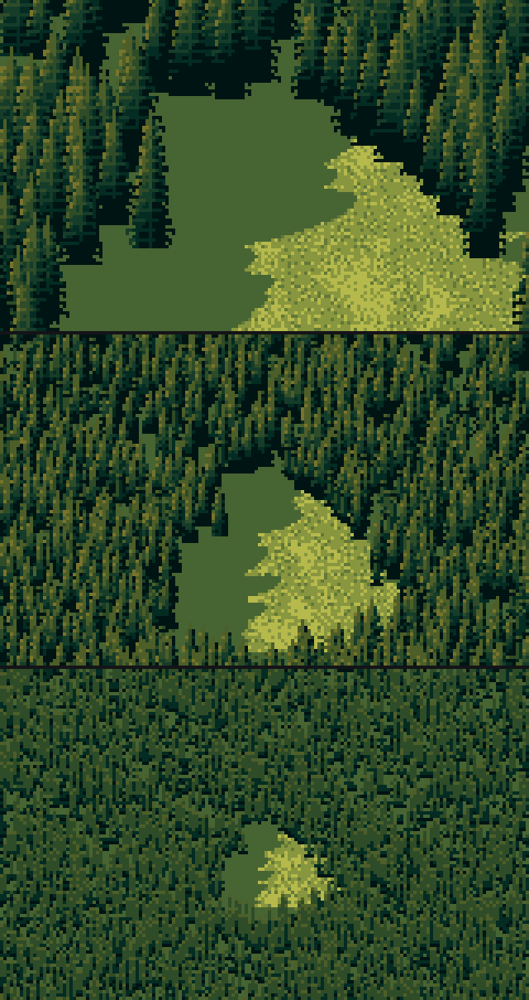
045. With the lit-cap gradient: lit tops, dark bases, the stand reading as a mass of spires. This was the turn.
I also fixed the palette. I set albedos from the median colours in my measurement boxes, pushed chroma per material (conifer 1.35, meadow 1.15) instead of one global push, and added a hue walk along each ramp, shadows cooler and lights warmer, as Ferrari's conifers go from blue-black to ochre.
When crowns are smaller than a few pixels
A sprite can't be smaller than about 3 px. For far forest I rasterised every crown as a cone or dome bump on the terrain, ray-marched the combined surface, and lit it like ground: lit family where the crown surface faces the sun, the reflected-light step on the shade side (the photos: only a quarter of the canopy is dark), the darkest step only in the pits between crowns. Below ~2.5 px per crown even the bumps are too fine, so they're blurred away. The marks then become a blue-noise stipple of 1×2 dashes, a lit head with a darker stem under it, at 13% density. That's Ferrari's far lowland in V14: a flat tone and a sparse second tone.
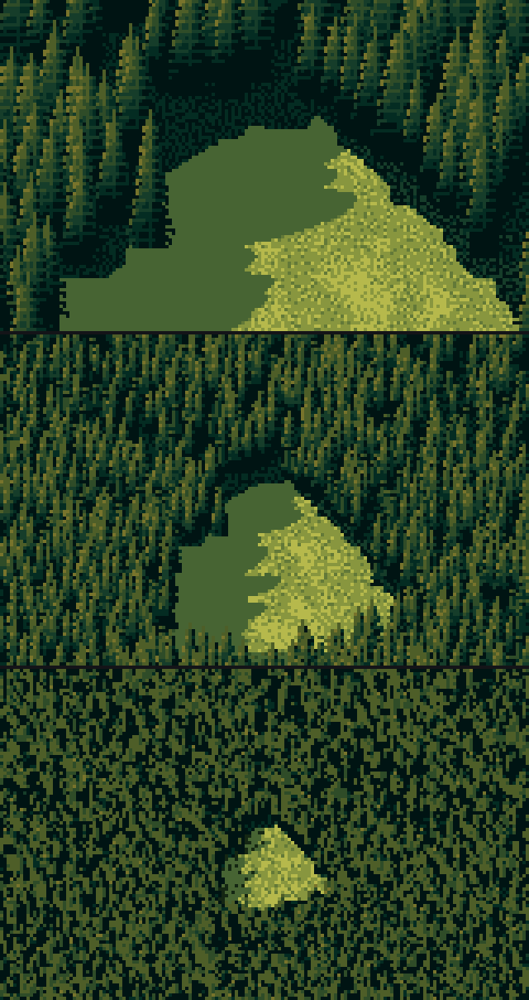
046. The canopy as a surface at far scales. It's calmer, and the clearing and its shadow edge read.
The study, and the crops I got wrong
The canopy study was three rows at three crown sizes (10 px, 4 px, 1.5 px), each with the photo downsampled to the same crown size, my pixels and a Ferrari crop:
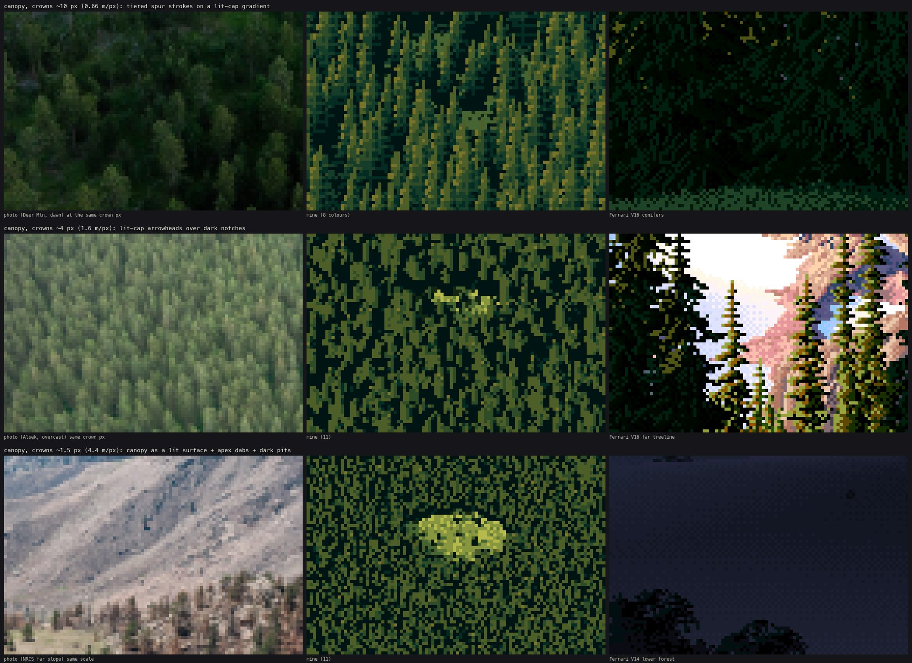
047. The first canopy study. The Ferrari crop in the top row is solid black, a patch of his night forest. The photo in the bottom row is a pale bare slope, not a forest. I had picked the crop boxes by guessing coordinates.
I made a crop sheet of candidate Ferrari regions, looked, and chose: V16's lit conifers for row 1, V16's far treeline for row 2, V14's lowland for row 3.

The final canopy study. Row 1: tiered spur strokes on the lit-cap gradient, beside Deer Mountain at the same crown size and Ferrari's V16. Row 2: lit arrowheads over dark notches. Row 3: the canopy surface with apex dabs.
Row 2 was first painted as a canopy surface, and it looked like moss. I lowered the sprite threshold from crowns of 5 px to 3 px, so 3–5 px trees are drawn as spire marks, and they read as trees again.
Later, when I put the canopy into plates (section 13), the forest slope read as an even carpet. The photos read the terrain through the forest: on slopes turned from the sun, the whole forest is a step or two darker. So each tree now takes ±1 step from the ground normal under it, relative to flat ground:
tn = trees["gn"] @ sun # ground normal under each tree . sun
dd = tn - sun[2] # relative to flat ground
tone = np.clip(tone + np.where(dd > 0.12, 1, 0) - np.where(dd < -0.08, 1, 0) - np.where(dd < -0.25, 1, 0), -2, 1)
Measured on my own plates with the same crown statistic I ran on the photos: spacing/radius 2.2–2.5 (photos 2.2–2.9), lit share 0.54–0.56 (photos 0.35–0.56), taller than wide by 1.44–1.75 (photos 1.25–1.5). My crowns are a bit too tall. I never fixed that.
8. Rivers: the dark mirror
From the Cosumnes photo (027), a river seen steeply from above is darker than everything around it: L* 23, almost colourless, against canopy at 53 and a sunny field at 68. Farther up the same river, at grazing angles, it turns into sky: L* 45, chroma 32, sky blue. Fresnel reflectance says the same: 2–5% at 30–40° down, 15–20% at 10–15°.
So the water technique traces each water pixel's reflected ray through the terrain and canopy. If it hits land, the pixel is the land-reflection step (the far bank's trees hang down into the water as a dark band). If it hits sky, the step goes from body to bright sky by the Fresnel term:
R = D.copy(); R[:, 2] = -R[:, 2] # mirror the view ray
t = Trefl.raymarch(P[None], R[None], t0=0.5, t1=3000)[0]
land = np.isfinite(t)
F = np.clip(fresnel(R[:, 2]) * WATER_BOOST, 0, 1)
x = 2.0 + np.clip(F * skyb * 5.0, 0, 2.2) # body (2) .. bright sky (4)
s = flat_bands(x, thr, 0.25) # flat bands, dithered only at the seams
s = np.where(land, 1, s)
Then the marks: the lowest water row (under the near bank's lip) is the darkest step, the top row (the far waterline) is a step lighter, and there are sparse 2–5 px streaks one step lighter along the current.
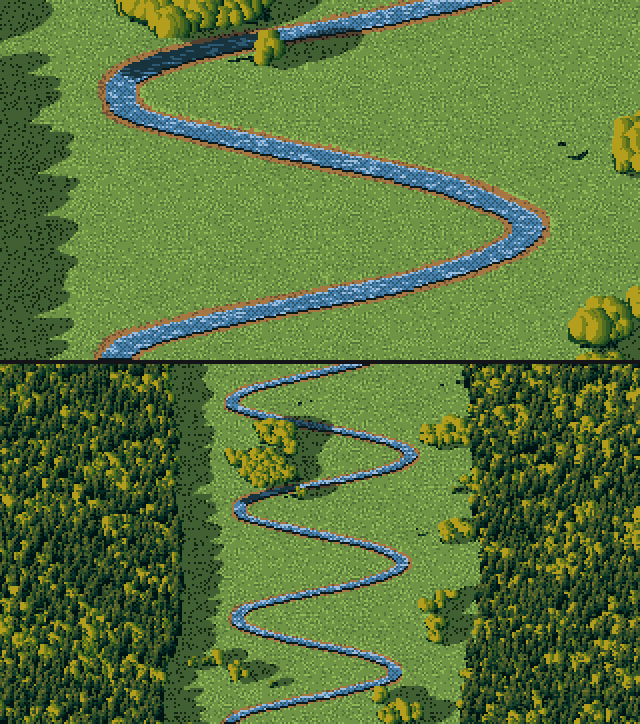
052. The first river valley. The river reads as a ribbon, but the valley edges are ruler-straight and the forests are two green walls.
The first river study missed the river completely: I had aimed the camera at the valley centre, and the meander was elsewhere at that row. I changed the study to put the target on the water:
lv = sc.water["level"]; j = int(470 / sc.T.cell); xs = np.nonzero(np.isfinite(lv[j]))[0]
tx = float(xs.mean() * sc.T.cell)

The river study. Row 1: the ribbon at 0.8 m/px, beside the Cosumnes photo at the same river width and Ferrari's V02 river. Row 2: at 2 m/px, point bars only on the inside of bends.
Two things I added after looking. The banks needed a 1.5 px strip of bare soil along the channel, the cut bank (056), or the water sat on the grass like a sticker. And gravel bars only belong on the inside of bends, which I got from the sign of the channel's curvature. I first put the Fresnel stylisation at ×2.5 and then brought it down to ×1.8, because at ×2.5 the river stopped reading as a dark mirror and became a blue road. (The docstring in tech_water.py still says ×2.5. The code says 1.8.)
9. The cirque, and a black hole
My first cirque was an fbm bowl with a radial wall:
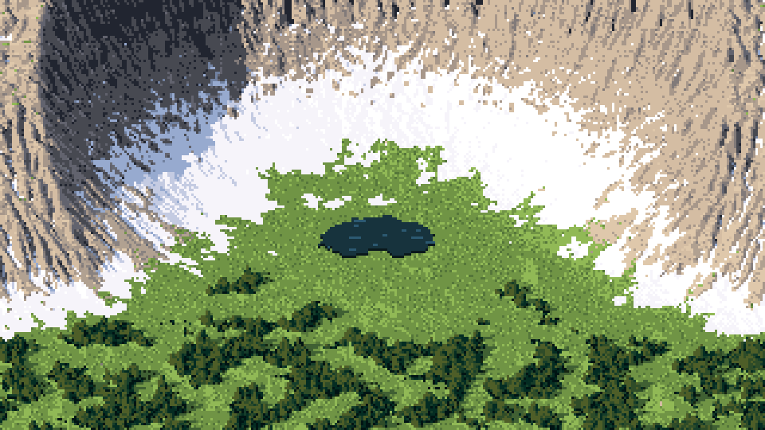
057. The first cirque: a round crater with a ring of snow. Nothing like any cirque photo.
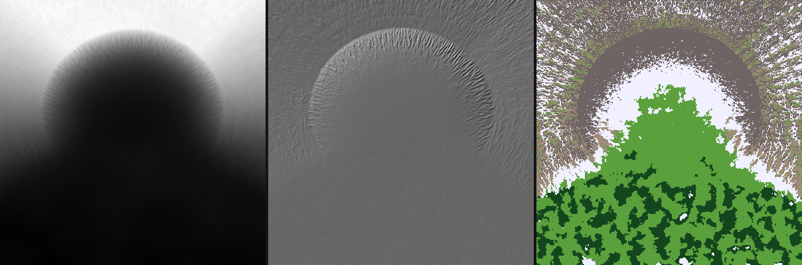
058. The debug view I made to see why: height, hillshade and cover map from above. It's a crater. Noise can't make a cirque, because a cirque's shape is its profile.
So I rebuilt it from the profile the photos show, as functions of radius and angle from the cirque's centre: the tarn floor, then a concave scree apron (steeper under the gullies, where the cones reach further out), then a 55–65° headwall terraced into cliff bands and notched by 13 gullies at random angles, then the crest. The walls are high at the back and open toward the camera:
R0 = 150 + 25 * wob - 45 * g # apron toe (cones reach further out under gullies)
R1 = 245 + 30 * wob + 25 * g # headwall foot
R2 = 350 + 25 * wob + 35 * g # crest
apron = np.clip((r - R0) / (R1 - R0), 0, 1)
h_apron = 0.6 * (R1 - R0) * apron ** 1.3 * (1 + 0.4 * g) # concave-up cones
wallt = np.clip((r - R1) / (R2 - R1), 0, 1)
h_wall = 1.9 * (R2 - R1) * wallt ** 0.9
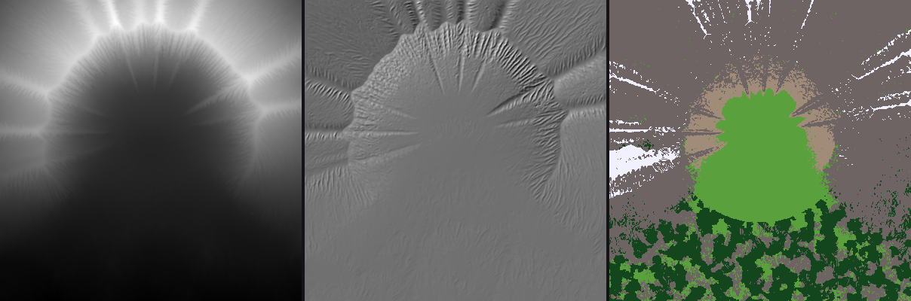
059. The rebuilt cirque from above: height, hillshade and cover. The gullies radiate from the back wall, and the apron and floor are rings around the tarn.
Then the render had a hole in it:
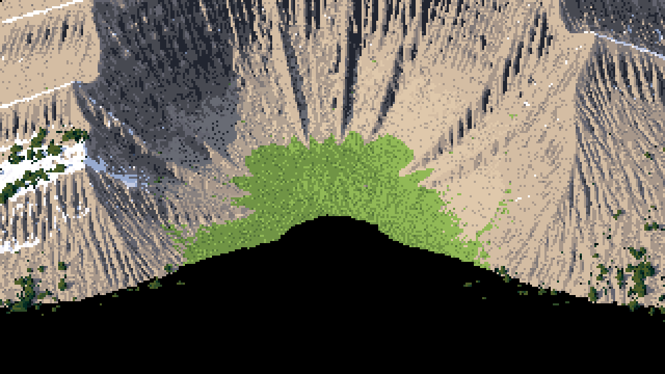
060. The rebuilt cirque, with a black mountain-shaped hole over the floor.
I traced a single ray from the middle of the hole and printed the ray height against the terrain height every 100 m. The ray clearly passed under the terrain at about t = 1800. The ray-marcher on the plain terrain found the hit at 1733. On the eroded terrain with the tarn's water level added, it returned inf. The marcher clips each ray to the slab between the terrain's lowest and highest points and stops at the slab's floor. Adding the water level raised the minimum height. The rays that meet the floor right at its lowest point then left the slab before any step had landed below the surface, so the bisection never ran. The fix was a two-cell margin past the slab floor:
tout = np.maximum(ta, tb) + self.cell * 2 / np.maximum(np.abs(dz), 0.05)
The same run showed a second problem: ndi.label of "below the tarn level" had flooded half the valley. I limited the tarn to within 160 m of the centre.
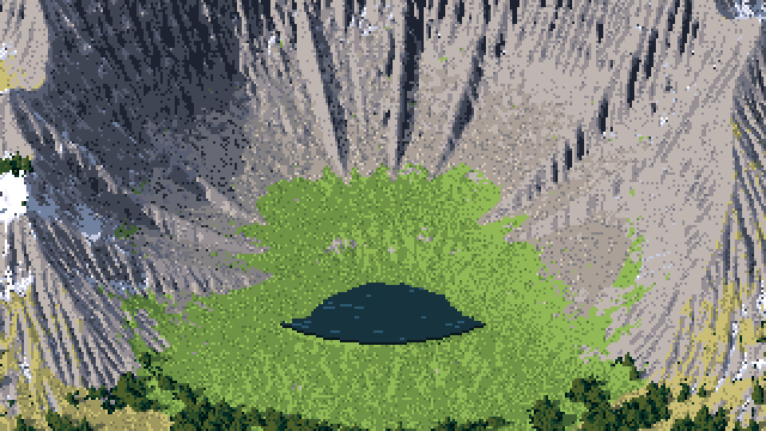
063. The cirque with the hole fixed and the mountain techniques on: scree grain, ledges, snow in gullies. The floor is still a flat green lawn. That's wrong (section 13).
Then I printed the material fractions in the frame: rock 54%, meadow 24%, snow 2%, ledges 0.1%. Almost none of what I had designed was being painted. The ledge mask needed a height-phase test on the terraced wall. The scree needed a higher cover weight so that it beat meadow on the apron. The erosion was also wrecking the terraces, so I ran 40,000 drops instead of 150,000.
10. Scree, cliffs and snow
Scree, first attempt: cobbles. I shaded Voronoi cells as stones everywhere on the fan, with a light top, a dark bottom and joints between them:
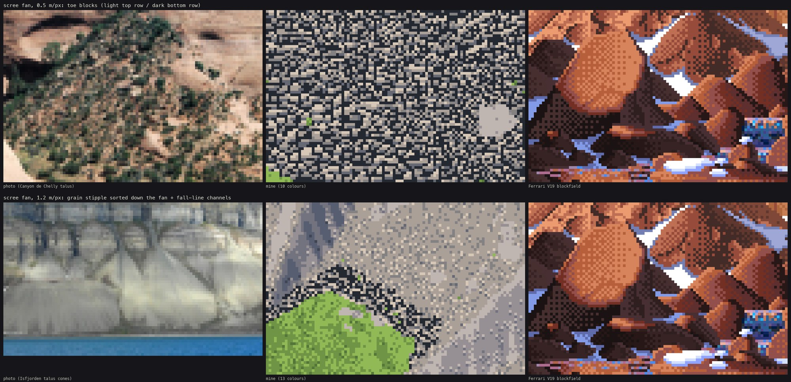
068. The first scree study. Top row, middle: my scree reads as a cobbled street. Every cell is a stone, and there's no matrix between them.
The photos (Canyon de Chelly, Isfjorden) show a quiet matrix with blocks scattered on it: few at the apex, many at the toe. So I deleted the Voronoi stones, kept the matrix as a grain stipple whose density grows down the fan, and made blocks into instanced sprites. Each block is Ferrari's stone: a flat lit top row with 45° ends, a mid body, a dark bottom row, the sun-side end a step lighter, and a one-row cast shadow shifted to the shade side. The first sprites didn't show up at all. The occlusion test that hides objects behind ridges compared each stone's depth to the terrain's depth with a tolerance of 2× the stone's size, and on a 30° slope seen from 30°, most stones failed it. At ×6 they appeared:
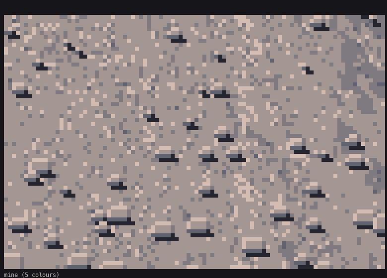
076. Stones on the matrix at 8×: light top rows, dark bottoms, one-row shadows.

The scree study. Row 1: one talus cone at 0.5 m/px (the talus_cone subject, built just for this). Row 2: the grain at 1.2 m/px with fall-line channels, a dark groove with a lit levee beside it.
Cliffs: bricks. Banded cliffs were a terraced height with a lit lip on each ledge and a dark line under it. My first cliffs had ledges as black zigzag lines on a flat grey (070), and the rock between read as a brick wall: my planar facets were isotropic Voronoi cells, so the rock broke into squares. I stretched the facets 3:1 along the fall line (LF.facets(X * 1.6, Y * 0.5, ...)), and the rock broke into flutes, like the Cascades photos.
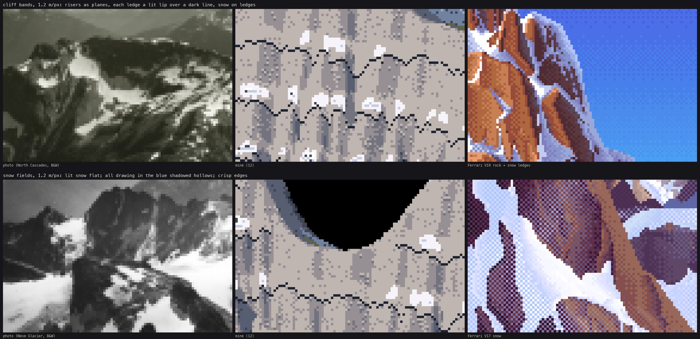
070. The first cliff and snow study. Top: ledges as black zigzags on flat grey. Bottom: the snow panel with its black hole, the rays that missed the terrain.
Snow: a black hole again. The first snow panel had a big black shape in it (070, bottom row). It was the same bug in a new costume: iso rays that miss the terrain have no material, and material 0 renders black. There was no sky. I added a sky (flat bands, dithered at the seams) for every ray that misses. The snow itself follows the photos. Lit snow is two flat values, all the drawing is in the blue shadowed hollows, the downhill edge is a darker lip, and a few rocks poke through along the edges. My first snow mask was thresholded noise, which gave salt-and-pepper snow. Blurring the weight before thresholding gave coherent fields.

The cliff and snow study. Top: ledges as snow strips and lit lips on fluted risers. Bottom: a snowfield at 1.6 m/px, beside the Neve Glacier photo and Ferrari's V17 snow.
11. Huts, fire and the coast
Huts from 30° down read by four things, in order: two roof planes of very different value, the cast shadow, one lit wall edge under the eave, and a bare-earth apron with paths. I rasterised each hut from its 3D planes by splatting points into the index canvas, so each face carries its own step. Its shadow, the convex hull of the hut projected along the sun, goes in first and moves the ground under it into its shadow family (Canvas.to_shadow, which keeps the ground's texture). The paths join the huts along a minimum spanning chain.
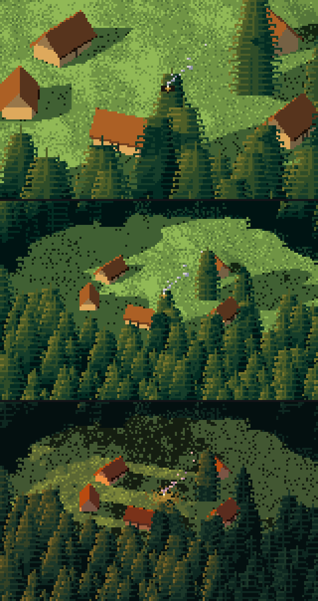
082. The first village at 0.25 and 0.5 m/px, afternoon and evening. The huts read at once, and so do their shadows. After this I took out the lone trees the clearing had inherited from the forest subject (one stood next to the fire) and gave the trodden soil more weight, so the aprons and paths hold together.
The fire is an ember ring, a 1–2 px flame, smoke drifting downwind as sparse pixels thinning with height, and at dusk a dithered glow pool on the ground.
The coast is zoned by depth, not distance: shallow turquoise over sand, dark over rock, deep blue beyond. The first surf was white blobs:
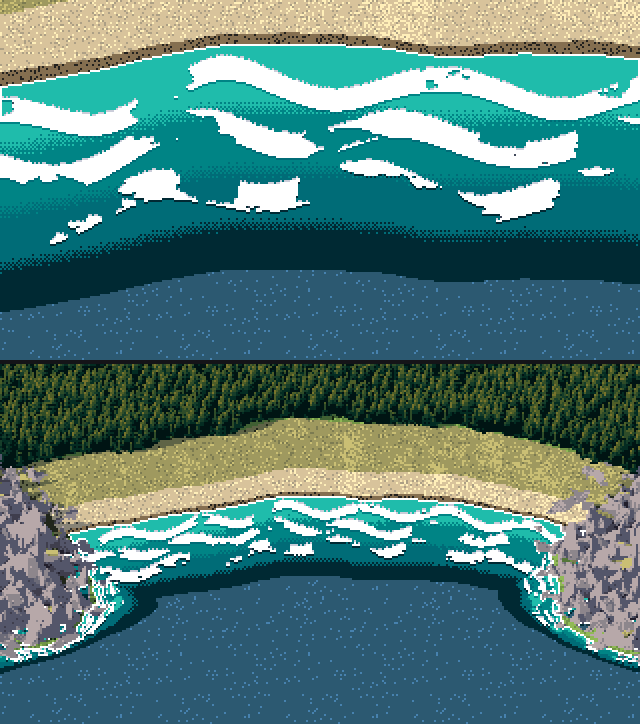
086. Surf as crests where depth crosses 0.6 / 1.4 / 2.4 m, 0.2 m wide. They came out as fat white worms.
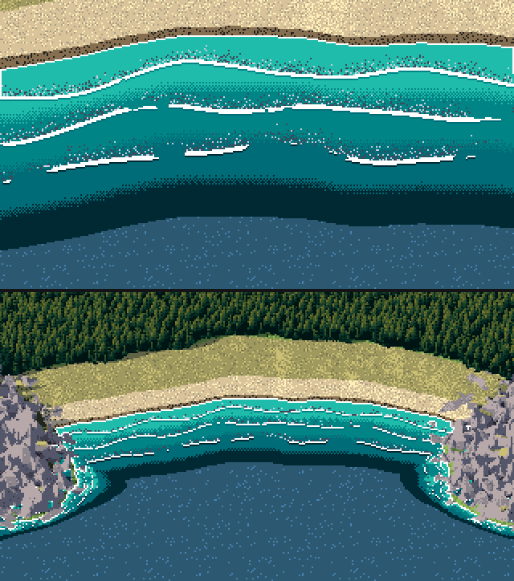
087. The fix: a thin crest line, and landward of it a lace of foam whose density falls off as (1 − d)². That's what the drone photos of breaking waves show.
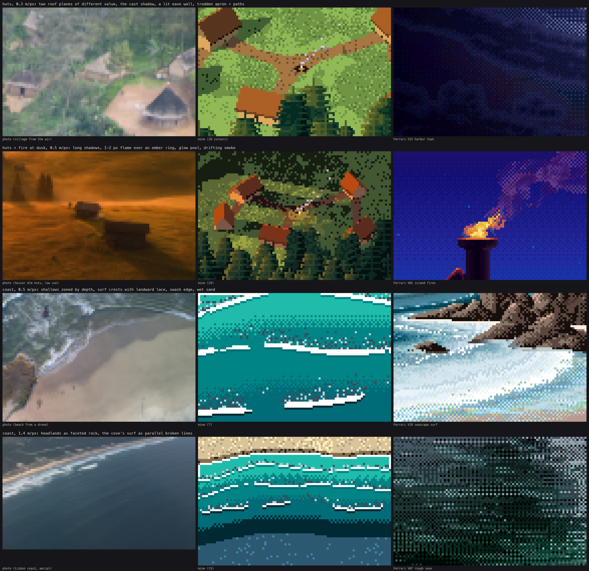
092. The huts and coast studies together. My V15 Ferrari crop was night-black again. I recropped it to a lit window in the town.
12. The far view
The far view is a perspective camera 3 km up over a 9 km range (range_valley): ridged noise over a U-shaped trough, 160,000 erosion drops, a river, forest to a treeline, snow above a snowline. For aerial perspective I split the ray distance into depth bands and mixed each band's colours toward the light's haze colour (0 / 22 / 45 / 68%).
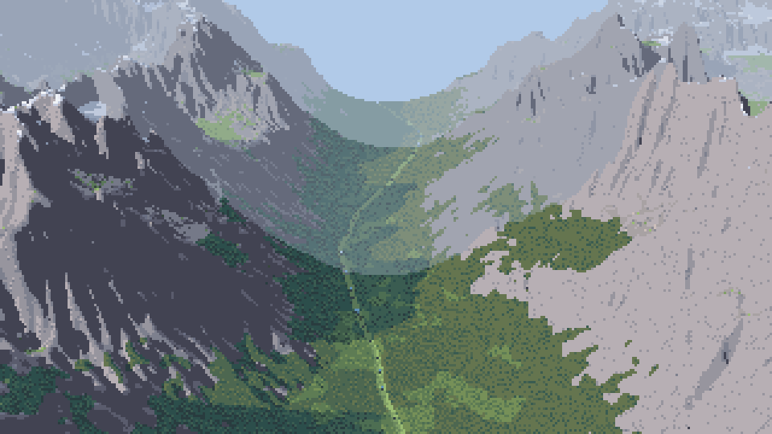
083. The first far view. There's a hard milky ring where band 1 starts, and the river is invisible. At 30 m wide it's under a pixel.
The ring is the band edge. I dithered it by jittering the distance with a Bayer threshold before binning:
band = band_of(G["t"] * (1 + (thr_4 - 0.5) * 0.06), bands)
At 14% jitter the seams became wide checker bands that looked like smoke (084), so I cut it to 6%.
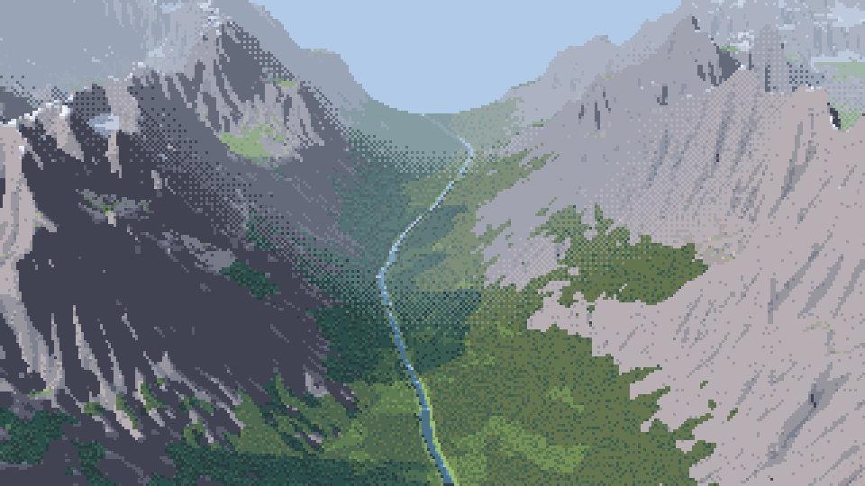
084. The 14% jitter: the band seams are wide checkered smoke. The widened river now reads.
I widened the river to 90 m so that it reads. I added cavity tone: gullies go one step down in both families, spurs one step up in the light. At a few km, this is what draws the mountain.
Two more parts were in from the first far render. The haze photos showed that far masses collapse to two values, a lit and a shade, close together. So in band 2 each material keeps only its two family tones plus its darkest accent, and in band 3 only lit and shade. Even so, the frame used 80 colours, and 86 with the dithered seams. So I added a palette budget: merge the closest pair of colours, weighting rare ones first, until 64 are left. On this plate the budget does less than it sounds: the evening version needs 69 colours without it, so it merges only five.
The evening plate came out of this. Violet haze, a lifted black point, and the river as a thread of lit sky down the valley.
13. Plates, and judging them against photos
Every plate is 320×180 beside an oblique photo of similar framing, box-downsampled to the same size and shown at 3×.
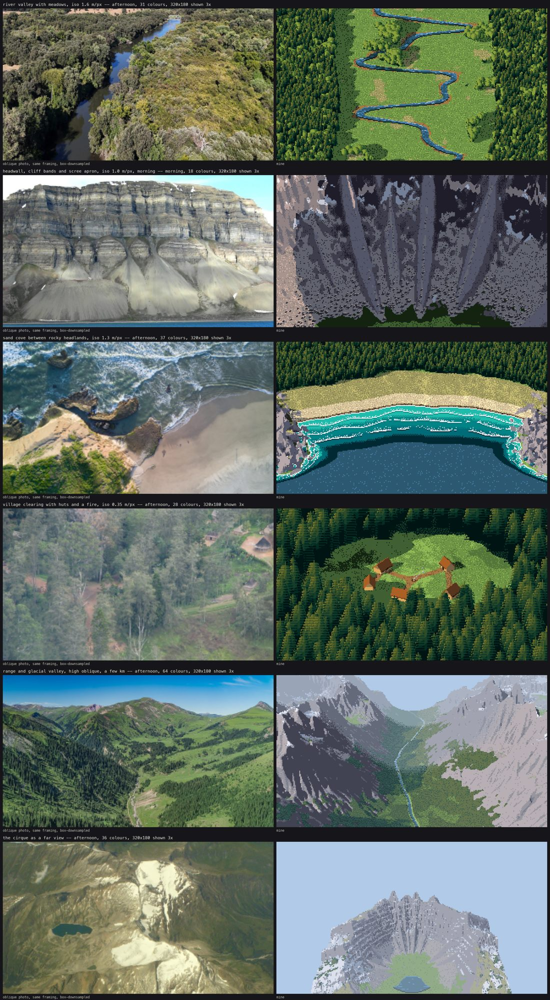
097. The first round of plates. Forest slope: an even carpet with a hole in it, next to a photo whose forest reads by its ridge and meadows. River: a green board with a blue snake. Cirque: convincing walls around a lawn.
What I did about each:
- Forest. I raised the relief (
relief=0.3), added meadow gaps, and added the per-tree slope tone from section 7 (099, below). It's better. It still doesn't have what the photo has: a ridge against a far valley, a track, a composition. The painter can't invent those. The scene has to have them.
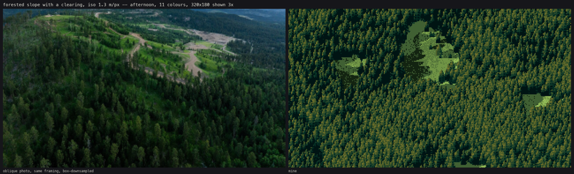
099. The forest plate after the relief, gaps and slope tone. - River. I made the forest edges ragged and added groves. The valley walls are still too straight. - Cirque. Photos of cirque floors (Sawtooth, Opabin) show pale glaciated slabs with pockets of turf and krummholz. I added slabs and krummholz (106).
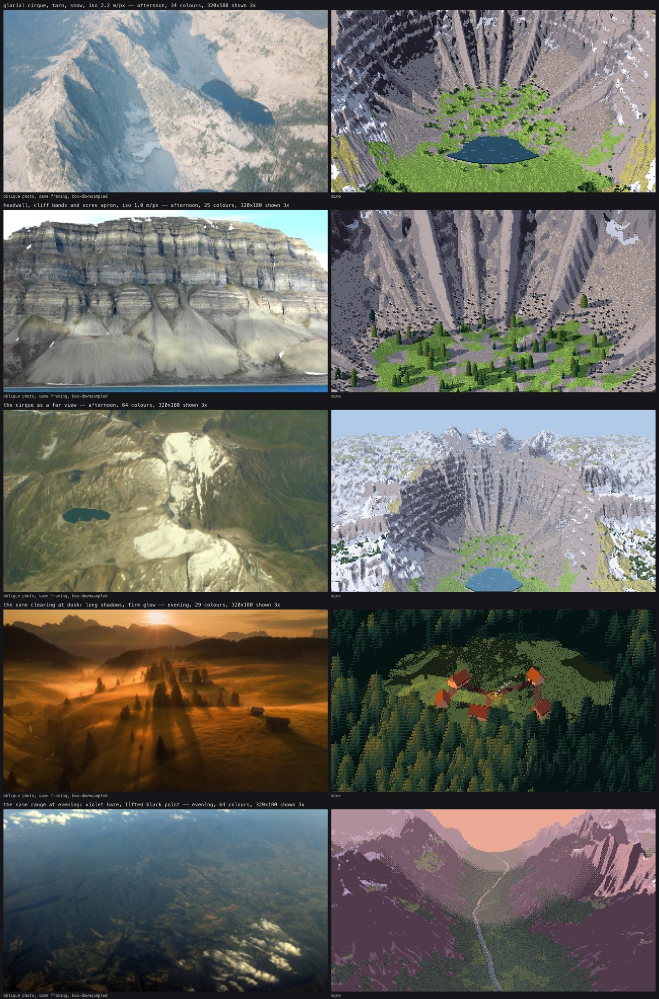
106. The second round. Cirque with slabs and krummholz. The headwall plate, now with trees and stones on the apron. The cirque as a far view, where the far snow is still salt-and-pepper. The village at dusk. The range at evening.
14. Sheets, and processes that died
The sheets sweep subject × scale, subject × light, subject × seed, and the far view × light. Each cell is painted from the same index canvas. Only the palette changes with the hour.

100. Subject × scale. The top row is the canopy handing off from spur strokes (0.3 m/px) to spire marks to the canopy surface (4.8 m/px) without a visible pop.
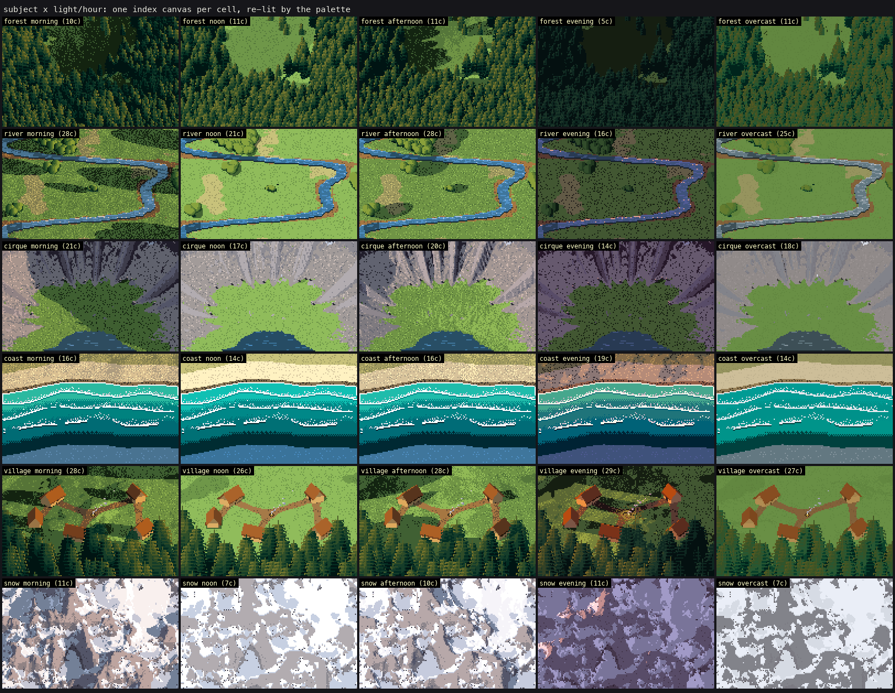
101. Subject × light. The evening forest was five colours of near-black. The photos really are that dark (Deer Mountain at dawn: canopy L* 8), but it wasn't a painting. I lifted the morning and evening sky ambient. That was my choice, not a measurement.
The sheets ran as background jobs with a pool of four worker processes, and they died twice with BrokenPipeError from the pool's workers: the harness had killed the parent process. Relaunching the chain in its own session (subprocess.Popen(..., start_new_session=True)) fixed it.
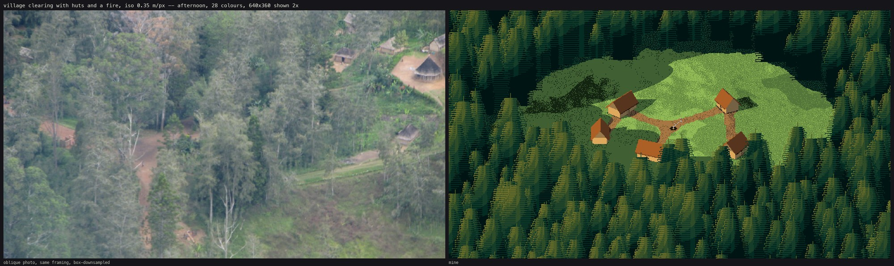
105. The village at 640×360. At 0.18 m/px the crowns are over 20 px, and the regular tier spacing reads as horizontal venetian-blind stripes across the whole forest. The spur stroke needs irregular tiers above ~15 px. I found this at the end and didn't fix it.
What I'd tell the next student
- Look at the photo at the pixel size it will have. One
resize(..., Image.BOX). It shows you the mark. - Draw your detector's output on the photo before you believe a number. My first crown sizes were my
min_sigma. - Pick the technique by how many pixels the thing is, not by what it is. A conifer at 10 px, at 4 px and at 1 px is three techniques.
- Noise can't make a landform whose identity is its profile. Cirques, talus cones and coves had to be written as profiles.
- Print the material fractions in the frame. I had designed ledges and snow, and 0.1% and 2% of the pixels were painting them.
- Black shapes are missing data, not dark things. Both black holes in my renders were rays that returned nothing.
- Pick Ferrari crops by looking, not by coordinates. Three of my crops were night-black the first time.
What was used afterwards: the crown numbers (spacing 2.2–2.9 lit-cap radii, lit share 0.35–0.56), the dark-mirror river and the haze measurements went into voxsim's far-painting work, where they fixed a milky forest, and lib/ was named as the input for the far and biome lanes. The plate that was singled out was the evening range.